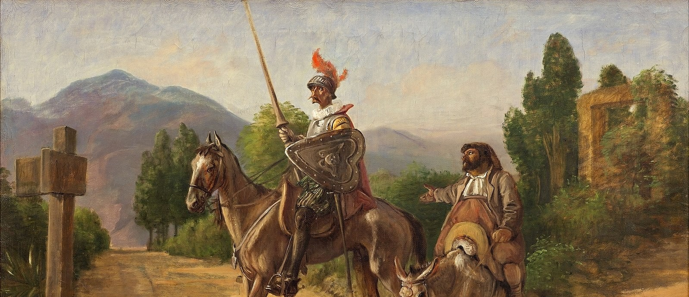

Plot Summary
Follow Don Quixote's journey from his library to the roads of La Mancha. Understand the structure, key moments, and narrative twists.
Explore Plot →Welcome to QuixoteQuest
Explore Don Quixote's windmills and dreams through interactive guides, deep analysis, and character profiles. Master literature's most influential novel in one seamless journey.

1605 & 1615 — A decade of revisions and meta-narrative genius
Over 900 pages of adventure, satire, and unforgettable characters
From dreamers to tricksters—each with their own story arc
Invented the modern novel and inspired centuries of writers
Your Learning Path
Jump into the story, explore themes, meet characters, or challenge yourself with our interactive quiz.
Follow Don Quixote's journey from his library to the roads of La Mancha. Understand the structure, key moments, and narrative twists.
Explore Plot →Dive deep into themes of reality vs. illusion, metafiction, power, and justice. See how Cervantes breaks literary rules.
Read Analysis →Unpack the novel's central ideas: authorship, perception, loyalty, and the clash between idealism and reality.
Discover Themes →Meet the cast: Don Quixote, Sancho Panza, Dulcinea, and 20+ others. Interactive cards reveal their roles and arcs.
Meet Characters →Discover Miguel de Cervantes—soldier, captive, and revolutionary writer. Understand the life behind the masterpiece.
Learn Bio →Test your knowledge with 15 questions: multiple choice, true/false, and character guessing. See how well you know the novel!
Take Quiz →When Cervantes published Don Quixote, the novel didn't exist yet. What he created wasn't just a comedy about a deluded knight—it was a revolution in storytelling.
"The novel keeps asking: who owns a story—the one who lives it, the one who writes it, or the one who reads?"
A central question of Don QuixoteWhether you're discovering Don Quixote for the first time or diving deeper into a favorite book, QuixoteQuest is your guide.
What you'll explore
From the plot's opening mad moment to Quixote's final renunciation, we've mapped every essential element.
Part I and Part II in full—no skimming required. Every major episode, from the windmills to the Barcelona duel, explained with context.
Reality, illusion, authorship, power, class, friendship. How Cervantes explores these themes and why they still matter.
20+ character profiles, interactive modals, and character arcs. Understand who Sancho really is and why Dulcinea haunts the novel.